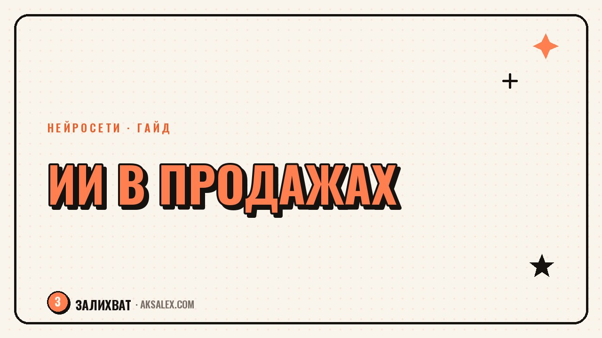

Нейросети для продаж: скрипты, воронки, аналитика

Отдел продаж держится на повторяющихся действиях: написать скрипт, обработать типовое возражение, сделать выжимку из звонка, подправить воронку под новый продукт. Нейросети берут на себя черновую часть этой рутины, а человеку остаётся то, что автоматике не отдашь - решение, как говорить с конкретным клиентом и что делать с выводами из аналитики. Разберём, где ИИ в продажах реально экономит часы, а где он только создаёт видимость системы.
Что нейросеть реально может в продажах
Прежде чем тащить нейросеть в отдел продаж, полезно развести ожидания. ИИ хорошо работает с текстом и структурой: собрать черновик скрипта, разложить возражения по категориям, вытащить из переписки ключевые фразы клиента. Он не понимает контекста сделки так, как менеджер, который час назад слышал голос клиента и его паузы перед ценой.
Рабочая модель простая: нейросеть готовит черновик и первичную обработку данных, а менеджер или РОП проверяет, дорабатывает и принимает решение. Если пропустить проверку и отправлять клиенту то, что выдала модель, без правок - это будет заметно и снизит доверие.
Где ИИ реально помогает
- Черновик скрипта холодного звонка или письма под конкретный продукт
- Варианты ответов на типовые возражения ("дорого", "подумаю", "уже есть поставщик")
- Расшифровка и краткая выжимка записанного звонка
- Разбивка большой воронки на этапы и точки касания
- Черновик коммерческого предложения по брифу
Где без человека не обойтись
- Тон и темп разговора с живым клиентом здесь и сейчас
- Решение о скидке, отсрочке или индивидуальных условиях
- Работа с недовольством и конфликтными ситуациями
- Финальная проверка цифр и условий перед отправкой клиенту
Скрипты продаж: как собрать сценарий за час
Скрипт продаж - это не текст, который зачитывают слово в слово, а каркас: цепочка вопросов, вариантов ответа клиента и переходов между ними. Нейросеть хорошо собирает такой каркас, если дать ей четыре вещи: продукт, портрет клиента, цель звонка и 3-5 реальных возражений, которые уже встречались.
Промпт стоит писать конкретно, а не в духе "напиши скрипт продаж". Модель без деталей выдаст общие фразы, которые придётся переписывать заново. Пример рабочего промпта: "Собери скрипт холодного звонка для продажи [продукт] владельцам [тип бизнеса]. Цель звонка - назначить встречу, а не продать сразу. Дай 3 варианта открытия, ответы на возражения 'дорого' и 'у нас есть поставщик', и вопрос для перехода к встрече". Дальше черновик проверяется голосом - его нужно проговорить вслух, а не просто прочитать глазами.
Пошагово
- Опиши продукт и портрет клиента в 2-3 предложениях
- Сформулируй цель звонка (встреча, демо, повторный контакт)
- Перечисли реальные возражения из прошлых разговоров
- Попроси модель дать 2-3 варианта на каждый блок, а не один
- Прочитай скрипт вслух, вычеркни канцелярит и штампы
- Проверь скрипт на 3-5 звонках и отметь, что не сработало
Скрипт, написанный нейросетью и не прогнанный через живой звонок - это просто красиво оформленный текст. Ценность появляется только после того, как менеджер его обкатал и подрезал под свою манеру речи.
Воронки продаж: где нейросеть достраивает шаги
С воронкой у нейросети получается похожая история: она хорошо раскладывает по полочкам то, что у вас уже есть в голове, но плохо придумывает воронку с нуля без вводных о продукте и цикле сделки. Дай ей длину цикла сделки, средний чек и текущие точки отвала - и она предложит структуру касаний и черновики сообщений для каждого этапа.
Особенно полезно просить модель находить пропуски: показываешь текущую цепочку писем или сообщений, и просишь найти, где клиент может уйти без ответа. Часто выясняется, что между "отправили коммерческое" и "звонок менеджера" нет ни одного касания, и клиент за это время успевает забыть, о чём вообще шла речь.
Что просить у нейросети для воронки
- Разбивку длинной сделки на этапы с примерным сроком каждого
- Черновики писем и сообщений для каждой точки касания
- Варианты дожимных сообщений для "тёплых", но молчащих клиентов
- Чек-лист вопросов для квалификации лида на первом контакте
- Формулировки для реактивации базы, которая не покупала полгода
Аналитика звонков и переписок
Второе большое применение - разбор того, что уже произошло. Сервисы речевой аналитики переводят звонок в текст и выделяют ключевые моменты: сколько говорил менеджер, а сколько клиент, какие возражения звучали, прозвучала ли цена и была ли попытка закрыть сделку. Для переписок в мессенджерах и почте принцип тот же - нейросеть вытаскивает из диалога суть и тональность.
Ценность здесь не в самой расшифровке, а в том, что на объёме звонков видны закономерности, которые не заметны на слух за одним разговором. Например, если в 70% проигранных сделок менеджер называл цену раньше, чем клиент спросил о ценности продукта - это повод переписать скрипт, а не винить конкретного сотрудника.
Что стоит регулярно вытаскивать из звонков
- Долю речи менеджера и клиента - перекос в сторону монолога менеджера обычно плохой знак
- Момент озвучивания цены относительно начала разговора
- Список возражений с частотой встречаемости за месяц
- Наличие и формулировку следующего шага в конце звонка
- Слова-паразиты и оправдательные конструкции у менеджера
Сравнение инструментов
Ниже - ориентир по типам сервисов, а не готовая рекомендация: выбор зависит от того, где живут ваши клиенты и разговоры - в звонках, в Telegram, в почте или в CRM. Универсальные чат-модели закрывают черновики текста, а речевая аналитика и CRM с AI-модулями - разбор уже состоявшихся диалогов.
| Инструмент | Для чего | Особенность | Кому подходит |
|---|---|---|---|
| Универсальная чат-модель (ChatGPT, Claude) | Скрипты, письма, разбор возражений текстом | Нужен точный промпт, не понимает контекст сделки | Малый отдел без бюджета на спецсервис |
| Речевая аналитика звонков | Расшифровка, выжимка, метрики по звонку | Работает только с записанным аудио | Отделы с активными холодными звонками |
| CRM со встроенным AI-модулем | Автозаполнение карточки, подсказки менеджеру | Зависит от качества интеграции с телефонией | Компании, уже сидящие в одной CRM |
| AI-модуль в мессенджер-платформе | Черновики ответов в переписке, теги диалогов | Требует настройки сценариев заранее | Продажи через Telegram и соцсети |
Частые ошибки при внедрении
Самая частая ошибка - отдать нейросети финальное решение вместо черновика. Модель не видит, что клиент вчера писал в директ и злился на задержку, и предложит нейтральный ответ, который в контексте прозвучит фальшиво. Второй по частоте промах - завести сервис аналитики и ни разу не свести цифры в сводку для команды: данные копятся, а решения по ним никто не принимает.
Третья ошибка - ждать, что нейросеть с первого запроса выдаст готовый результат. Хороший скрипт или воронка получаются за 2-3 итерации: черновик, правки по реальным звонкам, ещё один заход. Если бросить после первой попытки, легко решить, что "ИИ не работает", хотя не докрутили промпт.
- Не отправляйте клиенту текст от нейросети без проверки живым человеком
- Фиксируйте метрики из аналитики звонков в одну таблицу раз в неделю
- Дорабатывайте скрипт по реальным разговорам, а не по одной попытке
- Не храните в промптах для облачных сервисов персональные данные клиентов
Частые вопросы
Нейросеть может полностью заменить менеджера по продажам?
Нет, она берёт на себя черновую подготовку - скрипты, письма, разбор звонков. Решения по конкретному клиенту, тон разговора и работа с возражениями в моменте остаются за человеком.
С чего начать внедрение ИИ в отдел продаж, если бюджета почти нет?
Начни с бесплатной или недорогой чат-модели для черновиков скриптов и писем. Речевую аналитику и AI-модули CRM подключай позже, когда увидишь, что базовые сценарии реально экономят время.
Можно ли доверять нейросети разбор возражений клиентов?
Можно, но как первому черновику. Модель хорошо систематизирует типовые возражения из твоих же звонков, а точные формулировки под конкретный продукт нужно проверять на живых разговорах.
Насколько безопасно загружать записи звонков в облачные сервисы аналитики?
Зависит от сервиса и его политики хранения данных. Перед подключением стоит проверить, где хранятся записи, и не передавать в промптах чат-моделей личные данные клиентов вроде паспортных данных или номеров карт.
Как понять, что скрипт от нейросети реально работает?
Проверь его на 5-10 звонках и сравни конверсию в следующий шаг с прежним скриптом. Если менеджеры регулярно от него отклоняются или клиенты переспрашивают - скрипт нужно дорабатывать, а не считать готовым.
Раз тема оказалась полезной, вот что почитать следующим. С чего начать блог в Дзене: оформление канала, форматы контента и нейросети в помощь.
Читать статью →а не вручную